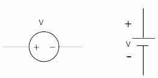

Voltage sources are the main energy sources of any circuit. There are two types of voltage sources according to the nature of current, namely DC voltage source and AC voltage source. As the name suggests, a DC voltage source produces direct current and applicaple only on those sectors, where the operating current is DC. Generally DC voltage sources are of several types. The common DC voltage source is batteries, where the DC current is generated by some chemical resction inside the battery cell. THe term internal resistance is very important for any DC voltage sources. All real DC voltage sources have a little amount of internal resistance, which is connected in series with the main DC voltage source. Voltage sources withut internal resistance is an ideal concept. Generally, the resistance is added in series with the load circuit. That is why, the actual voltage differs with the rated voltage of a battery.
Sometime AC voltage sources are converted into DC voltage source, this model is widely used in several labs where controlled and variable DC voltage is required. This model is known as variac. A rectifier circuit along with a variable resistor is acts inside a variac. The DC plug sockets at wall are also considered as DC voltage source. Different kinds of DC power supply is used for different application, as per the voltage level. Controlled DC voltage source is required in some applications, where the DC voltage source output remains constant regardless the load connected with it.
 by
by